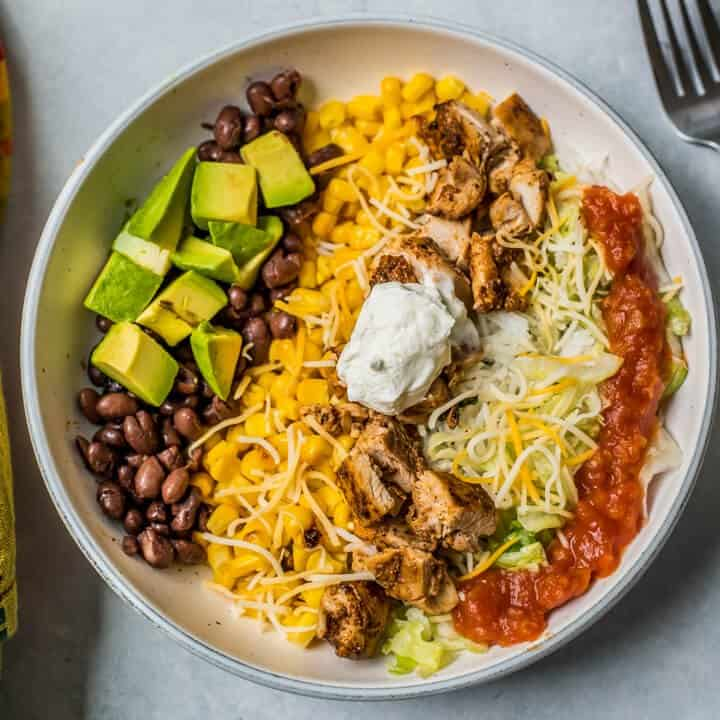

This the recipe for a burrito bowl

Description
Mexican seasoned chicken, cilantro lime rice, guacamole, oh my! Get your
healthy on with this high protein, macro-friendly, & delicious chicken
burrito bowl!
Prep Time: 30 Min
Cook Time: 20 Min
Ingredients
- 2 Cups of white rice
- 1 Lime
- 2tbs cilantro
- 12 oz chicken breast
- Favorite Mexican Seasoning
- 1/3 cup no salt added black beans
- 1/2 cup freash pcio de gallo or salsa
- 1/4 cup guacamole
- 1/4 cup shredded cheddar cheese
- 1 cup shredded lettuce
Steps
-
Toss coocked white rice with chopped cilantro, squeeze of line juice and
a pinch of salt
-
Toss chicken breask with your favorite Mexican seasoning and bake or
grill as desired
- Once your chicken is done cooking, cut into bite size pieces
- Warm your black beans in the microwave or on the stovetop
- Now it's time to build your bowl!
- Divide all ingredients below between 2 bowls
- Cilantro Lime Rice
- Shredded Lettuce
- Cooked Chicken Breast
- Black Beans
- Guacamole
- Fresh Pico De Gallo
- Greek Yogurt
- Finish off with a sprinkle of cheddar cheese and a wadge of lime
- Finally, serve with chips